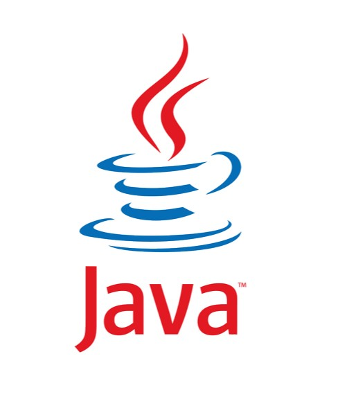
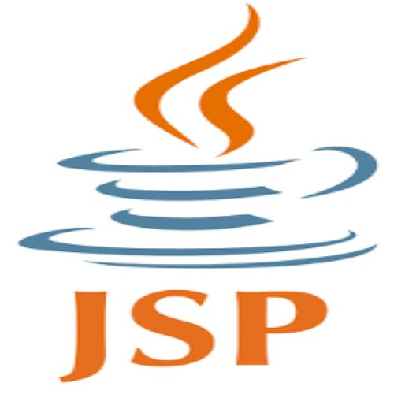
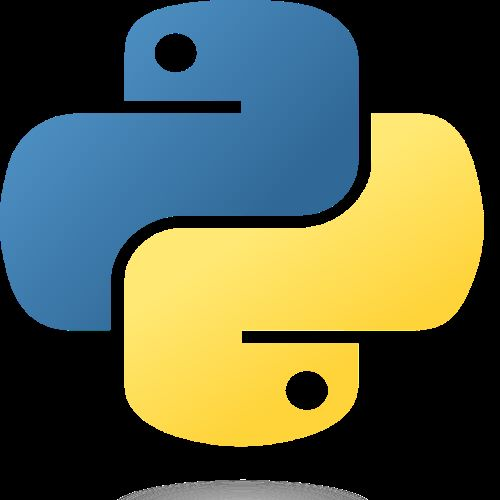
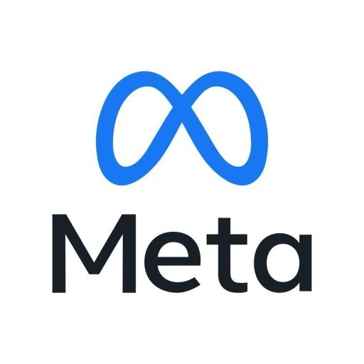

이름 : 강현구
직업 : 개발자를 꿈꾸는 학생
생년월일 : 2000 / 03 / 10
Portfolio
Html
웹사이트의 모습을 기술하기 위한 마크업 언어.
학기 중 가장 많이 사용해본 언어로 학기 초에는 서버 연결 조차 제대로 하지 못했으나
학기 중 프로젝트를 통해서 그 실력이 많이 상승했으나 새로 배우는 Spring에서는 다시 처음부터 하는 느낌이라
제 생각에는 실력이 많이 떨어진다고 생각을 하였습니다.

Java
객체 지향 프로그래밍 언어.
학기 초에는 많이 사용해본 언어로 Java 역시 프로젝트를 진행한 만큼 실력이 많이 늘었다고 생각을 합니다.
그러나 2학기에 들어와서는 사용빈도가 조금 줄어 들었기에 그에 따라서 실력이 줄었들었다고 생각을 합니다.

JSP
Java Server Pages로 자바를 웹서버에서 쉽게 쓰기 위한 기술
HTML 과 함께 많이 써본 언어로 개인적으로 HTML로 화면을 구성하는 것보다 더 많은 시간을 사용했다고 생각을 합니다.
역시 프로젝트를 통해서 실력이 많이 늘었으나 아직까지는 검색을 통한 사용이 많아 조금 부족하다고 생각을 합니다.

Python
인터프리터 방식의 프로그래밍 언어
학기 중 꾸준하게 하였기 때문에 실력의 변화가 가장 적다고 생각을 합니다.
그러나 사용하는 프로그램에 따라 명령어가 달라지기 때문에 조금의 실력 부족을 느겼습니다.
하지만 앞으로도 사용해야 하는 언어인 만큼 꾸준히 공부하여 잘하기 위해 노력을 할 것입니다.
편입과 대학원 준비
편입을 통해 대학원에 입학할 준비를 할 것입니다.
다른 대학원에 입학이 가능하다면 가고자 하는 분야의 제일 잘하는 교수님을 찾아 대학원에 입학을 하고 싶습니다.
그러기 위해서 편입을 하는 학교에서 열심히 공부할 필요가 있으며 또한 영어공부도 놓치지 말아야 합니다.
이제는 한명의 사회인으로 다가가는 시간이기 때문에 하기 싫은것에서 눈을 돌리면 안되는 시기라고 생각 합니다.

취업 준비
취업을 위한 회사로 인공지능과 관련된 연구원직을 생각하고 있습니다.
이에 대해서는 대학원까지 간 이후에 생각을 해야겠습니다만
대학원에 가지 못한다고 하더라도 처음부타 가르쳐주면서 키우는 회사에 취업하는 것도 좋을 것이라고 생각을 합니다.